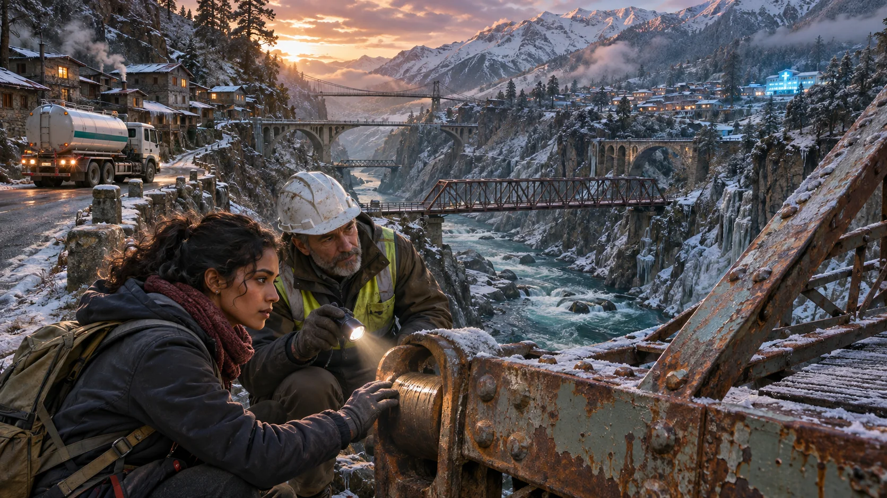

01 · The Red Barricade
East Gate Bridge · 06:18, eleven hours and forty-two minutes of oxygen remaining
The oxygen lorry waited with its engine off beneath a sign that said FAILED in red paint. Frost silvered the five bridges of the Neris Gorge. Beyond them, eighty thousand people woke among the mine chimneys while the maternity clinic's blue warning lamp pulsed above the roofs.

Inspector Dar Sen stood between the lorry and the bridge with a demolition key around his neck. He had put the same red sign on every span into the district. Behind him, residents worked bolt cutters through his barricade.
Mara VesThe reserve falls below safe pressure at eighteen hundred. There are six newborns on assisted breath and two women in surgery.
Mara, the clinic's senior nurse, held out the pressure log. Dar did not take it.
DarNo vehicle crosses.
MaraThen tell me which death your inspection prevents, so I can explain it to the mothers whose children you have chosen instead.
A bolt snapped at the barricade. Dar turned, and twenty district guards raised carbines from the bridgehouse windows. The residents stopped cutting, but they did not step back.
Illuminara landed beside the lorry lightly enough that the frost stayed unbroken. She looked first at the warning lamp, then at Dar's hand. His thumb rubbed a groove in the demolition key as if he had been counting hours with it.
IlluminaraMy aim is to get this oxygen to the clinic, stop any crossing that would bring the bridges down, and leave the district with a route it can trust without trusting one frightened man.
Dar flinched at frightened, not at bought.
DarYou know about the payments.
IlluminaraI know the owners paid you. I do not yet know what they purchased.
A mine siren sounded beyond the gorge. Three short notes meant a convoy had left the northern works. On the ridge, black ore trucks appeared one by one, escorted by armored cars. They were headed not for East Gate but for Harrow Span, the longest and weakest bridge.
DarThey purchased silence. The failures were mine.
MaraYou closed food, insulin and oxygen for silence?
DarI closed heavy roads. Then people began bribing clerks to call their loads light, so I closed all of them. If I publish what I found, the owners send those cars into the district, seize the assay house and call every sample sabotage.
He nodded toward the approaching convoy.
DarA true report is paper. Their rifles are steel. My lie is the only thing they have obeyed.
Mara opened the lorry's rear doors. Two travel bottles lay above ten tall line-feed cylinders locked into a shock cradle.
MaraI can use the two travel bottles for the operating rooms. The ten line-feed cylinders serve the newborn manifold. Tilt a cold regulator more than four degrees and it locks; reset takes eight hours. The sprung cradle keeps them level only while its wheels carry it.
Illuminara took the two travel bottles to the clinic by air and returned six minutes later. The operating rooms gained the night. The blue lamp over the neonatal manifold still counted down to eighteen hundred.
Mara pressed one rear wheel upward by a finger's width. The two-jointed frame twisted; the cradle's pendulum stops released, and the nearest glass bubble ran past its red mark. The ten line-feed regulators were safe only while four ground-contact wheels—or four hands on each paired wheel sling—shared the frame's weight. Lifted from one or two points, the two halves rolled against each other before any carrier could correct them.
Illuminara had strength enough for the lorry and only two hands. A level flight would not undo the twist created at takeoff. The safe cargo needed ten small four-point cradles moving on stone, with a person watching every bubble—not one powerful grip.
She placed one hand on the bridge rail. Deep inside the steel pins, something answered the river's vibration with a scatter of tiny, uneven clicks.
Not a single crack. A field of them, waiting under clean paint.
IlluminaraShow us what you found. Mara comes with us, and the demolition key stays where she can see it.
DarIf the owners arrive before you understand it, they will take the evidence.
IlluminaraThen understanding is the first emergency.
Dar looked at the clinic lamp again. He unclipped the key, put it in Mara's palm, and led them below the bridge.
No barricade opened. The oxygen clock kept running. But the residents lowered their cutters, and the guards lowered their carbines, because for the first time the closure had become a question other people were allowed to inspect.
02 · The Purchased Silence
East Gate inspection chamber · 08:03, nine hours and fifty-seven minutes remaining
Dar's hidden laboratory occupied a stone room inside the abutment. Five bridge pins lay on a bench. Four looked new. The fifth had split through its center like dry wood, though its surface still shone.
Bridgewright Lina Or set a spring hammer beside the pins. Her brother had died when a mine gantry failed the previous winter. Dar had signed that gantry safe.
LinaYou knew then.
DarI suspected the ore dust. I did not know the water mattered.
He filled two glass dishes from separate bottles. In one lay ordinary bridge dust. In the other, violet-black fines from the new Veyr seam. He added gorge water and lowered identical steel coupons into both. A small current meter trembled over the violet dish.
DarThe new concentrate carries sulfide glass. Mixed with our alkaline wash water—
MaraTell me what it does to the bridge, not what it is called.
DarIt drives hydrogen into cold-worked steel. The atoms gather around stressed pin holes while the paint stays clean.
He hooked two hair-thin steel wires to the same little weight. One had sat in ordinary bridge dust. The other had sat in Veyr fines and gorge water. The darkened wire parted before the weight cleared the bench; the clean wire held.
MaraHow long does a proper laboratory need to prove that?
DarThree weeks. A court needs three months. The owners need twenty minutes to empty this room.
Lina clamped a split pin into a frame, hung a calibrated weight from it, and struck the frame once with the spring hammer. Two ceramic listening tabs, each cheap enough for a school laboratory, sent their traces to a paper recorder. A clean pin made one narrowing wave. The suspect pin answered with a ragged second band below it.
LinaAcoustic emission. The cracks move under the test load and speak after the strike.
DarIf you test too hard, you grow them. If you test too softly, a lawyer calls the second band noise.
Illuminara studied the five years of maintenance cards pinned beneath the bench. Dar had circled the same delayed low band at five bridges, two cranes and the failed gantry. He had also signed false invoices, accepted twelve sealed payments and condemned sound masonry approaches so no one could reach the steel spans.
IlluminaraYou made yourself the only person who could interpret the warning.
DarI made one throat they would have to cut instead of forty.
LinaYou made forty throats dependent on whether you lost your nerve.
Dar did not defend the gantry signature. He laid his bribe ledger on the bench.
DarThe first payment bought a false assay. I told myself I needed access. The second bought my silence about the first. After that, every bridge failure I issued was true in purpose and false in fact. If I confessed without proof, they would reopen all five and hang the collapse on me. They would not be entirely wrong.
Mara turned the oxygen log face down, not to hide the clock but to keep from using it as a weapon for one minute.
MaraWhat would have made you tell us before today?
Dar looked at Lina.
DarA warning that did not die when I did. A test the owners could not purchase from one expert. And some chance that stopping the ore would not bring the provincial army to protect the contracts.
Illuminara understood then why arresting him first would repeat the structure of his lie: safety would still depend on whoever held the key and the file.
She set the clean pin, the cracked pin and an unused listening tab in front of Lina.
IlluminaraCan a bridge crew repeat this without believing Dar?
LinaWith a fixed hammer stroke, a fixed hanging weight and two tabs a measured distance apart. Seven minutes per hanger. The result is not a certificate. It is a triage test strong enough to stop a load and demand a proper lab.
IlluminaraThen we do not publish his conclusion. We publish the method, the limits and every raw trace. Miners who lost people run it. Drivers run it. The owners may run it on steel they choose.
DarThey will jam the recorders and seize the pins.
LinaThen we use paper drums, tuning reeds and eyes. No network. No single sample.
Mara turned the oxygen log face up again.
MaraNine hours and forty-one minutes.
Dar opened a false wall. Behind it were forty listening tabs, six spring hammers, sealed shavings from every span and the original mine wash instructions.
DarI was waiting for a day when evidence was stronger than force.
IlluminaraNo. You were waiting for evidence to become force by itself. Today people will have to choose what it means.
03 · A Test With Many Hands
Harrow Span west approach · 11:26, six hours and thirty-four minutes remaining
Lina painted the test instructions on the tollhouse wall in letters visible across the road: CLAMP. HANG FORTY KILOGRAMS. STRIKE ONCE. READ AFTER TEN SECONDS. DO NOT REPEAT ON A RED RESULT.
Six teams worked on six accessible hangers. Each team included a bridge worker, a miner and someone who did not work for the mine. Mara kept the raw paper traces in clear sleeves. Dar answered technical questions from inside a chalk circle the bereaved families had drawn around him. No one had forgiven him; everyone could see him.
The first clean reference pin drew one sharp curve. The first Harrow hanger produced the low ragged band. So did the second. At the third, Lina handed the hammer to Jori Pell, lead driver of the approaching convoy.
Jori's ore truck waited beyond the armored escort. Her hands were gray with steering dust.
JoriCaptain Rusk says this is theater staged by the inspector who took the bribes.
LinaThat is why you strike it.
JoriAnd if I make the line you want, you say I proved it.
Lina rotated the paper drum and covered the earlier traces. She gave Jori three sealed tabs: one for a clean depot pin chosen by the owners, one for a dust-exposed coupon chosen by the miners, and one for the hanger. Jori chose their order and kept the labels in her pocket.
LinaBlind us, then.
Jori ran all three tests. The clean pin made the narrow wave. The other two made the delayed band. She uncovered the labels herself.
Captain Venn Rusk stepped from the first armored car. His soldiers spread along the road but kept their weapons down. He was broad, tired and wearing a mine rescue badge older than his commission.
RuskA low note does not feed eighty thousand people. If this convoy misses the refinery tide, the lenders call the contracts. The province sends receivers with twice my rifles and none of my local drivers.
IlluminaraSo your goal is to keep the mine from being taken by people who will care less what breaks.
RuskMy goal is that workers are paid next week. The inspector had a year to tell us his concern. He sold it instead.
DarI told Director Pell. He offered to replace every pin after the winter shipment and paid me to hold the district quiet until then.
RuskYou accepted.
DarYes.
The plain answer struck harder than an excuse. Rusk's jaw tightened. Jori held up her three traces.
JoriLet my drivers test the other trucks' route.
RuskYou are contracted to drive.
JoriI am licensed to refuse an unsafe span.
Rusk removed a folded order from his coat. Provincial seals covered its edge.
RuskEmergency mineral continuity. It suspends local closure powers. At fourteen hundred, one empty scout truck crosses Harrow. If the deck holds, the convoy follows at quarter spacing.
LinaAn empty crossing proves almost nothing. If a hidden pin goes, it may kill the scout and still leave your lawyers calling the death operator error.
RuskThen offer something that keeps the contract alive today.
Mara pulled the transport plate from the oxygen cradle and laid it on the bonnet of Rusk's armored car. The red line marked four degrees.
MaraThe travel bottles are already at the clinic. Ten line-feed cylinders still have to cross level. The stone arch is wide enough for their wheel slings by six centimeters, not for this lorry.
Lina drew that six-centimeter clearance on the back of the provincial order. Beside it, Jori spread the convoy manifest.
JoriThe refinery's minimum is four trucks, not forty. The south rail spur can carry four sealed bins if the bins never touch the mine wash.
DarThere are six clean transfer bins in the old copper shed. I hid them from the inventory when Director Pell ordered everything through the wet crusher.
Jori turned the mine contract to a page Rusk had signed two winters earlier. She put her grease-black thumb beneath one sentence.
JoriVerified refusal by licensed drivers releases the six-day wage bond. It does not require an owner's permission. My blind trace is one refusal. Forty-six drivers are waiting to repeat it.
RuskVerified by whom? The inspector who sold the first assay?
JoriBy me, Lina and whichever engineer you choose. My refusal begins the draw. Your signature can stop the owners delaying it.
The option formed where the objects touched: four trucks on Jori's manifest, six clean bins on Dar's inventory, the bond sentence under Rusk's name and a blue line Lina drew from the rail spur to the refinery. It did not ask the stone arch to carry ore. It left that narrow route for oxygen.
IlluminaraOpen the wage bond now. Move the ten cylinders across the arch on level slings. Hold road ore for full testing, then send the refinery minimum by rail in the clean bins. The contract survives today without making a bridge prove itself under forty trucks.
Dar stepped outside the chalk circle before Rusk could answer.
DarThere is one more thing. The south main pin will fail first. I altered the maintenance map so your crews would reinforce the north and choose another span.
LinaYou weakened the record.
DarI thought I could control where the risk went. I cannot ask you to trust the map now. Test the south pin and use this confession against me.
RuskWhy should a confession from a purchased man change an armed order?
DarIt should not. The trace changes the order. The confession removes my last way to steer you with a lie.
Rusk's radio spoke in Director Pell's clipped voice: proceed under provincial authority, seize the assay house, deliver Sen to company custody. Rusk listened twice. Then he looked at the bond clause bearing his own signature and at the drivers holding unstruck tabs.
RuskIf I cross, wages might last one week and the district might lose its roads. If I hold, the bond pays the same week and the rail option keeps the contract alive. That is a choice I can defend.
At 13:49 he wrote a six-hour suspension across the emergency order, activated the wage draw and held the paper where every driver could see it.
RuskNo loaded vehicle moves. Four sealed bins go to the rail spur only after independent tests. The drivers may refuse without charge.
Engines shut down from the rear of the convoy forward. Rusk had answered the offer before any steel broke.
RuskI still need an official strain trace the province cannot dismiss as a bench trick. A real vehicle, a real crossing, every gauge visible.
IlluminaraDoes the province require a driver inside it?
Rusk looked at the line he had written across the emergency order.
RuskIt requires a known empty mass and an unbroken instrument record. Not a person.
Jori pointed to the scout truck's rear recovery eye and the capstan on the west bank.
JoriLock the steering, release the engine brake and haul it by rope. My drivers choose the tabs and keep the paper drums. Put a second line on the chassis before it touches the span.
LinaAnchor that line to the granite pier, not Harrow. If the south pin opens, the truck stops with the proof instead of carrying anyone down.
IlluminaraYou asked for evidence the receivers cannot erase. Let the people they would overrule own the instruments, and put no life inside the test.
Rusk crossed out the word DRIVER on his order and wrote REMOTE HAUL—CREW CONTROLLED.
RuskDo it. The suspension stands whether the span holds or fails.
At 14:00, the empty scout began to move toward Harrow on Jori's rope. The loaded convoy remained silent behind it.
04 · The Weight of One Crossing
Harrow Span and the stone service arch · 14:00, four hours remaining
Jori worked the west-bank capstan with two drivers. Lina had sealed tabs to the south hanger, the truck axles and a clean reference beam; Rusk's chosen engineer watched the labels disappear beneath wax. Illuminara had carried the arrestor cable around the granite pier and stepped away from the truck.
The unmanned scout's front wheels touched Harrow. Its known weight drew a clean axle trace and a ragged second band from the south hanger.
RuskContinue at walking speed.
He did not need the crossing to decide whether to stop the convoy; that decision already stood. He needed a record the province could not dismiss, and he had accepted a way to obtain it without spending a driver.
At the midpoint, every listening reed on the south hanger chattered. The main pin split. The deck dropped the width of a hand, and the truck rolled half a wheel before the arrestor cable tightened against granite.
LinaHold the capstan. No second strike.
Jori stopped the rope. No person stood on the span. Illuminara braced a loose parapet long enough for the road crew to withdraw its instruments, then let the damaged stone settle where Lina marked it.
The broken pin lay in daylight, its center bright with branching cracks. Jori placed her blind trace beside the continuous load record. Harrow remained standing and unusable; the failure had proved the method without creating the suspension or demanding a rescue.
RuskSend the sealed drums with my order. The drivers keep the originals.
MaraSend them now, before anyone says the bridge had to break for you to listen.
Rusk transmitted the wage draw, raw traces and suspension order to every convoy cab, mine gate and provincial clerk. The paper originals stayed in Jori's hands.
His radio crackled again. Director Pell ordered the armed escort to place Dar in company custody for theft of proprietary samples.
Dar went still. Two owner guards moved toward the chalk circle.
Illuminara stepped between him and the armored cars. She did not hide him behind her.
IlluminaraPublic custody, an open evidence chain and a protected escort. He stands trial, and he stays alive to testify. No private car and no sealed room.
Els An brought the magistrate's temporary custody band from the tollhouse. She was the clinic's insulin courier; her sister Hana had gone thirty-one hours without a dose when Dar closed East Gate.
ElsYou do not get to disappear into their custody or hide in ours. Take the front handle. You carry what your lie stopped.
Dar accepted the band and the front handle of the first sling. Els took the other end. His knees bent under the weight. She kept the bubble level between its two red marks and did not help him more than the cargo required.
Mara opened the lorry. Two empty travel-bottle slots showed what Illuminara had already delivered. The ten line-feed cylinders waited in five paired wheel slings. Four handles and four ground-contact wheels kept each two-jointed frame from twisting; a glass level made every error visible.
Rusk signed the public-custody refusal and sent it with the evidence packet. The owner guards stepped back, not persuaded, but faced by witnesses whose names were already attached to the record.
RuskMy command may buy one day before the province replaces me.
IlluminaraThen spend the day making replacement harder.
Illuminara walked beneath the stone arch beside the carriers. She did not touch the cylinders: one powerful grip would twist a paired frame, while four carriers could correct each bubble before it crossed red. When loose blocks threatened the wheels, she held each block only long enough for local masons to wedge it. Mara set the pace. Lina checked every sling. Els and Dar crossed first, breathing the same cold air and choosing, step by step, not to let go.
At 16:47, the clinic manifold accepted the tenth line-feed cylinder. The violet lamp returned to blue with one hour and thirteen minutes left.
Inside the nursery, six small chests kept rising. No speech entered the room. Under Els's eye and a public guard's, Dar repaired a leaking regulator while Mara watched every turn of the wrench.
05 · Three Bridges
District assay house · 19:14, after the clinic changeover
The assay house doors had been removed and laid across barrels as worktables. On them rested traces from five bridges, two cranes, three truck axles and steel chosen independently by the owners, bridge crews and miners. The method and its failure limits covered the wall.
Three spans reopened for pedestrians, ambulances and vehicles below a posted mass. Harrow Span and North Chain remained closed for dismantling. No heavy ore moved.
Dar placed twelve payment seals, the altered maintenance map and the original wash instructions before Magistrate Ilen.
DarI accepted the first bribe before I knew the mechanism. I accepted the rest after I knew enough to be afraid. I falsified failures, restricted medicine and altered a safety record. The fact that I meant to prevent a larger death does not return anyone the choices I took.
Els stood with her sister Hana, pale but upright. Lina stood with the families of the gantry dead. Harm from the closures and harm from the failed steel had separate faces.
ElsWe will testify to what you exposed. We will also testify to what you hid.
DarYou should.
Rusk laid the wage bond beside the evidence. Its draw would cover six days of wages and begin an independent materials laboratory under Lina, with raw records copied to every road station.
RuskI believed uninterrupted work was the only shield against outside control. I nearly destroyed the district to keep command of it.
JoriThen put the next shipment decision to the crews with the measurements attached.
RuskAgreed.
The magistrate ordered Dar to preserve the sample chain, transfer every hidden ledger and teach investigators under Lina's supervision. He would hold no certification vote, touch no sample alone and receive no automatic leniency.
ElsUse what he knows. Do not let him own the test again.
DarAgreed.
Mara arrived after the evening rounds and set an empty oxygen-cylinder cap on the table.
MaraThe babies are stable. Tomorrow we need food, insulin and two replacement valves. A victory that blocks tomorrow's lorry is another kind of barricade.
Illuminara found Dar at the open doorway, the custody band bright around his wrists and two public witnesses beside him.
DarThe rifles were still steel.
IlluminaraYes.
DarYou did not defeat them.
IlluminaraNo. People who could have driven chose not to. A commander who could have ordered them chose to spend his authority on time. Families who could have abandoned you made you carry with them. The proof gave those choices somewhere to stand.
Dar looked toward the three green bridge lamps and the two dark spans that would never reopen.
DarIf I had told them a year ago, some might have died in the seizure.
IlluminaraPerhaps. Understanding your fear does not make the harm imaginary. It tells us what the replacement must survive.
The magistrate called him. Dar walked into custody under his own power.
At East Gate, Lina replaced the red FAILED sign with a board showing the tested members, permitted load, next inspection hour and crew on duty. It did not say SAFE.
The first vehicle across was Mara's clinic van carrying empty cylinders back for filling. Jori drove. Els watched the trace drum. On the far side, residents made room without cheering, and the bridge answered the light load with one clean, narrowing note.